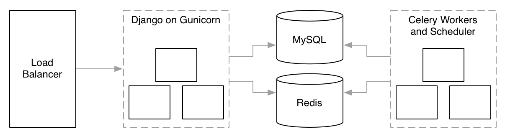

When an increase...

When an increase of data, in quantity or kind, causes your tools or approach to fail.


{ "title": "Example Schema", "type": "object", "properties": { "firstName": {"type": "string"}, "lastName": {"type": "string"}, "age": { "description": "Age in years", "type": "integer", "minimum": 0 }, "required": ["firstName", "lastName"] }
/